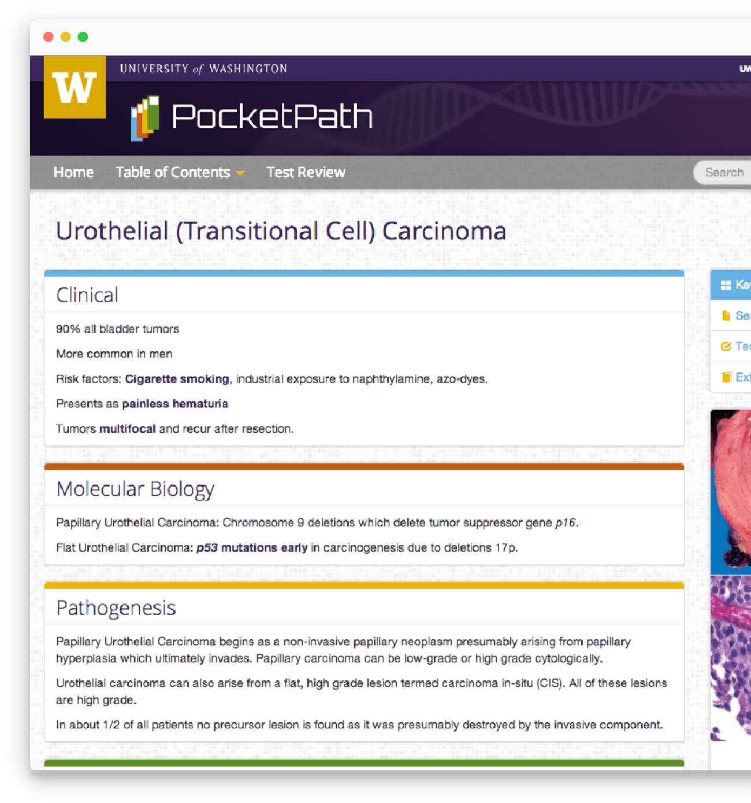
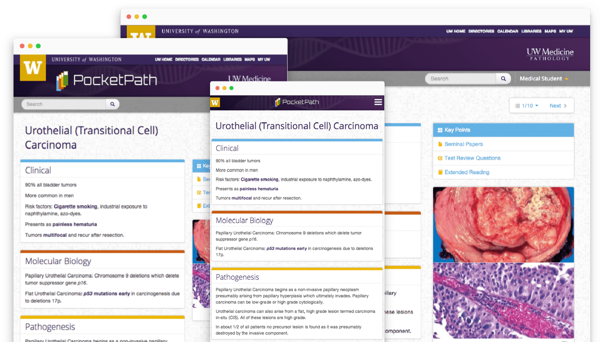
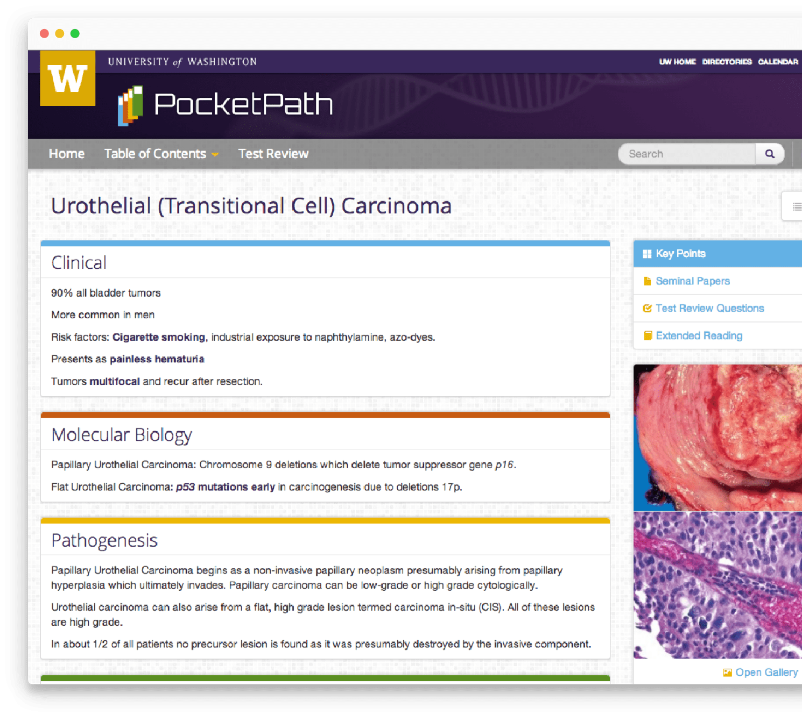
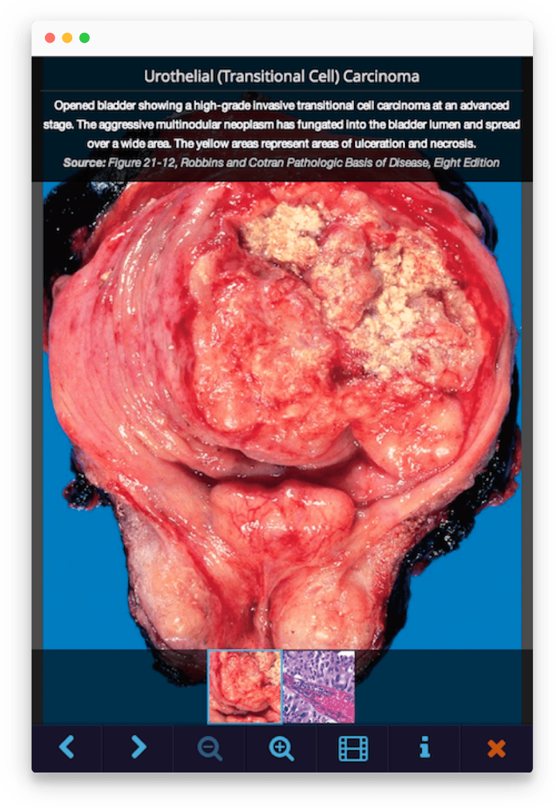
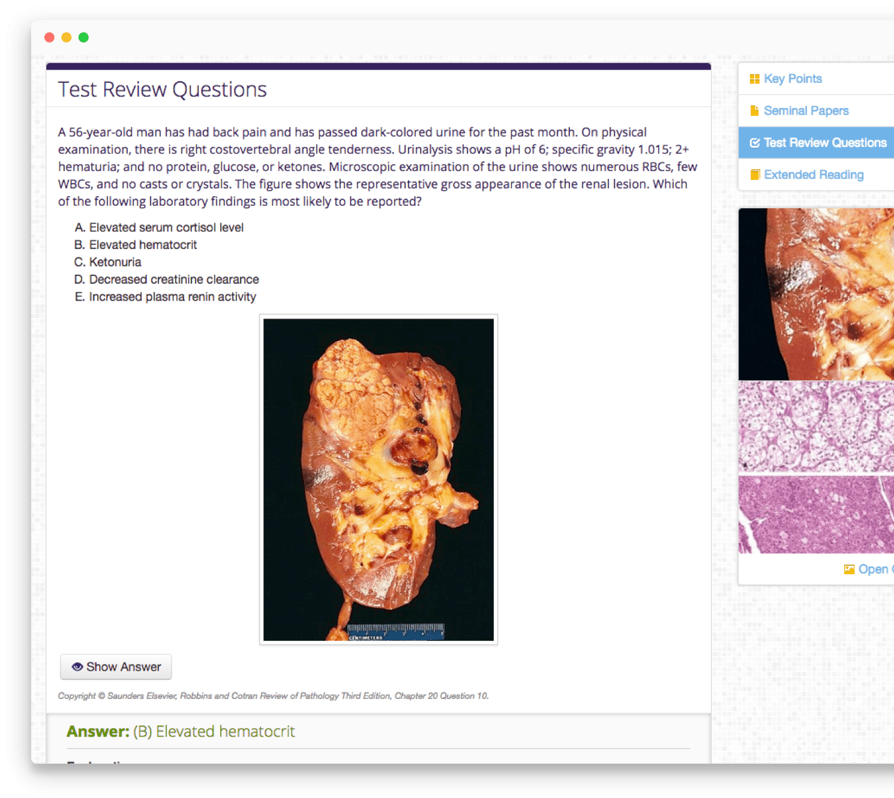
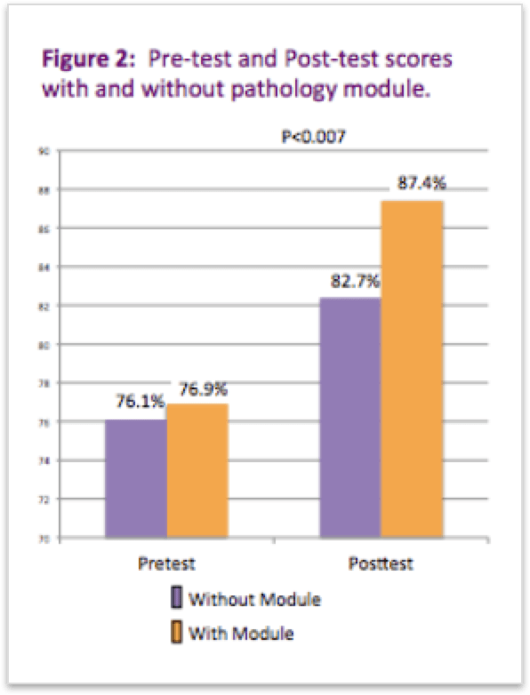
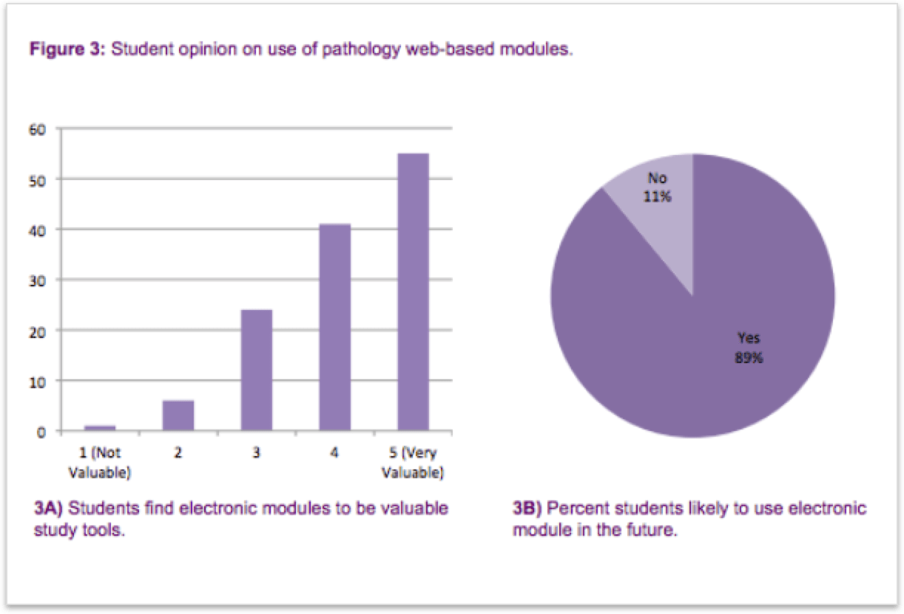
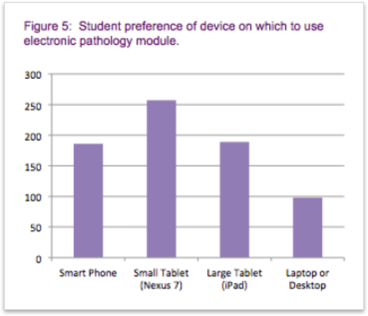

A better way to study Pathology
As a web developer intern at the UW Medical Center, I helped designed and developed a website to help medical students study pathology more effectively.

As pathology knowledge continues to expand, it is becoming increasingly difficult for medical students to identify important material while studying. We designed a comprehensive web-based pathology modular education system to provide a focused method for medical students to learn pathology more effectively in order to pass the Medical Licensing Exam.
Pathology is one of the subjects covered in USMLE (United States Medical Licensing Examination) Step 1 and is one of the hardest subjects to prepare for because of its extensiveness.
As a result, it is difficult for students to identify the most important material, which can lead to unfocused study, curricular dissatisfaction, and lack of knowledge essential for the national boards and clinical practice.
We made sure the website is responsive so students can access it with all kinds of devices when they study.

Each module contains 1 disease and is broken down into 4 key points, which includes clinical presentation, pathogenesis, molecular/genetic rearrangements, and differential diagnosis. The 4 key points are curated by pathology professor, Mara Rendi, MD, PhD, at UW Medical Center.

A critical part of pathology is learning how to recognize the physical appearance of a disease as well as identifying patterns in the tissue slides to confirm the diagnosis. Each module is complimented with images or tissue slides to help students have a complete understanding of the disease.

Each module also has USMLE Step 1 board style questions for students to practice. This helps students set their expectation for the USMLE.

We tested Pocketpath on 40 2nd year medical students at the University of Washington. All students received a pre-test on a subject that had previously been covered in lecture. The control group prepared for the post-test with traditional ways while the experimental group prepared with just Pocketpath.
20 control subjects reviewed lecture notes, recordings, and text over a 1 week period prior to taking a post-test.
20 experimental subjects were only given Pocketpath and no other resources prior to taking the post-test.
There was no statistical significance between groups on the pre-test. However, experimental subjects scored significantly higher on the post-test than control subjects.

95% of the experimental subjects expressed satisfaction with modules and 75% felt the modules were more helpful than reading the textbook.

We also surveyed the students on the preference of device for using Pocketpath and it validated our responsive design decision.

Students enjoyed the modules and a majority felt they would use this system in addition to standard curriculum. Many students felt Pocketpath could replace some lecture time, leaving more opportunity for active learning.
Pocketpath was presented at the 2014 University of Washington Symposium.